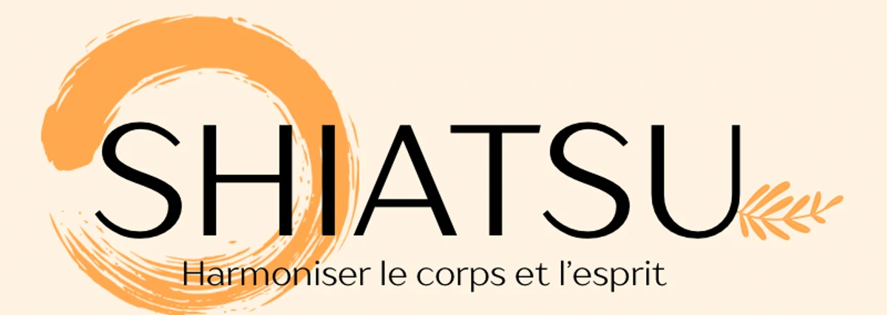
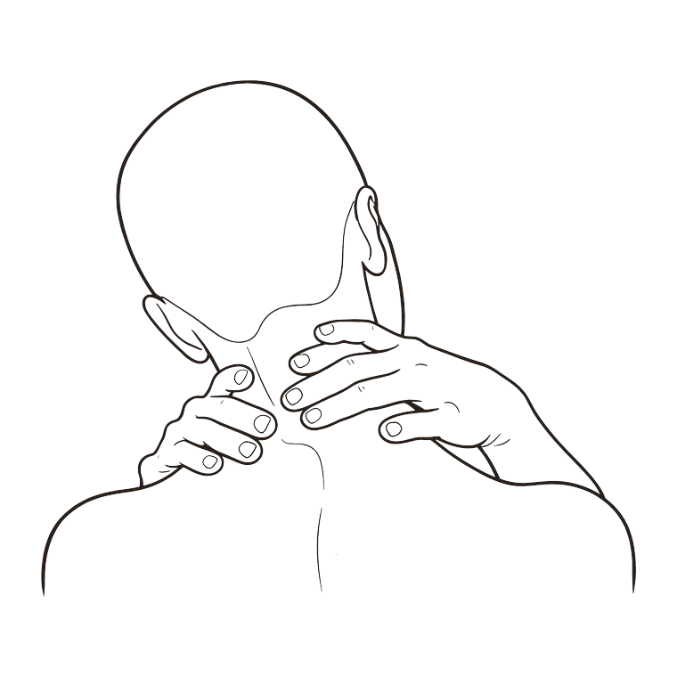
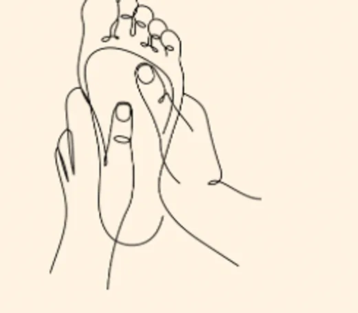
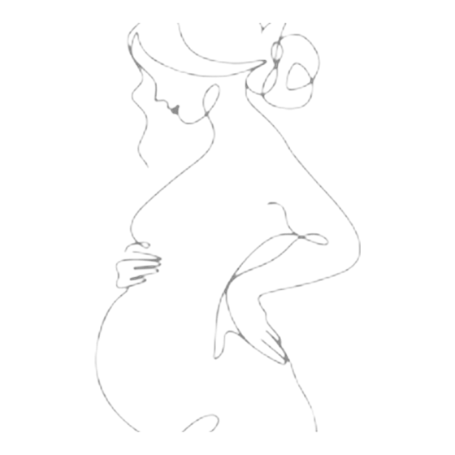
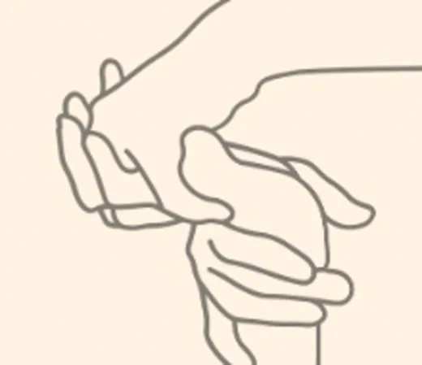

Séance Harmonie
90 minutesLa séance complète. Le corps entier est parcouru sans se presser, avec le temps de s'installer au début et de revenir à la fin.
100 €
Knœringue · Haut-Rhin · sur rendez-vous

Les mêmes points énergétiques que l'acupuncture, sans aiguilles, simplement par la pression des doigts. Une heure pour soi, allongée et habillée, où l'on ne vous demande rien d'autre que de respirer.
Le shiatsu
Les mêmes points que l'acupuncture, sans aiguilles.
Shiatsu veut dire « pression des doigts ». Je suis les lignes d'énergie du corps et je m'y arrête là où il faut, avec les pouces, les paumes, parfois les coudes. Rien n'est forcé, rien n'est brusque.
Vous restez habillée, allongée sur un futon. La séance se déroule dans le calme et se termine par un temps d'échange. Beaucoup de personnes s'endorment ; c'est plutôt bon signe.
Quand venir
On vient en shiatsu comme on prend soin de soi : parce que le corps est tendu, parce que la tête ne s'arrête pas, ou simplement parce qu'on a besoin d'une heure à part.

La nuque, les épaules, le dos. Les tensions qu'on finit par ne plus remarquer tellement elles sont installées.

Les périodes chargées, le sommeil agité, la fatigue qui ne passe pas avec une nuit de repos.

Un accompagnement doux, adapté à chaque étape, avant comme après la naissance.
Les séances
La séance complète. Le corps entier est parcouru sans se presser, avec le temps de s'installer au début et de revenir à la fin.
Le format habituel, celui de la plupart des séances de suivi.
De quelques mois à douze ans. Un temps court, adapté à l'âge, avec un parent présent.
Le visage, le crâne, la nuque. Pour celles et ceux qui portent leurs tensions au-dessus des épaules.
Tarifs applicables au 1er mai 2026. Règlement sur place.

Qui je suis
Je suis praticienne en shiatsu traditionnel et je reçois à Knœringue, dans le Haut-Rhin, à une vingtaine de minutes de Saint-Louis et de Bâle.
Je suis membre de la Fédération Française de Shiatsu Traditionnel, qui garantit un cursus complet et une pratique encadrée.
Me contacter
Dites-moi simplement ce qui vous amène et le moment qui vous arrange, on trouve un créneau ensemble.
06 17 11 14 05